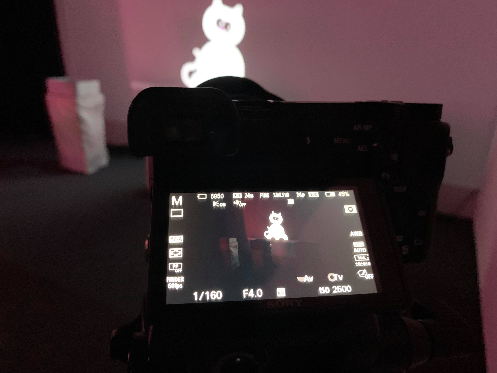
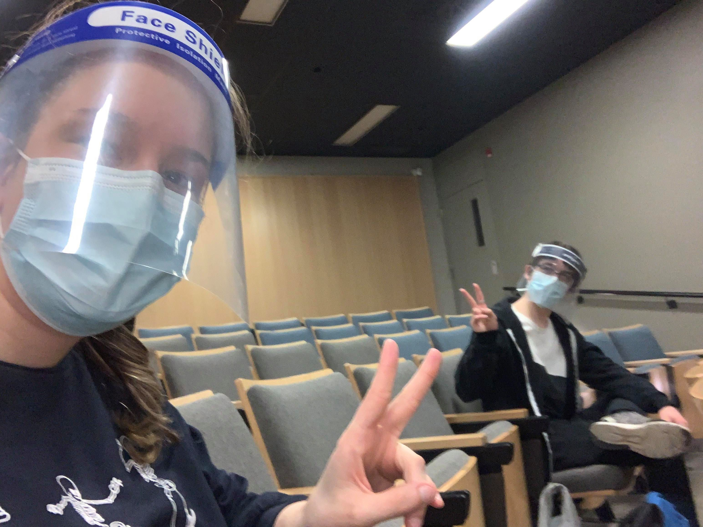

Les Chatoyants
Espace virtuel interactif
22 au 25 mars
Accéder au projet
Diffusion en direct
25 mars, 19h à 21h
Assister à la présentation
Résumé du projet :
Dans ces temps difficiles, le projet des Chatoyants a pour but de rassembler les gens à distance, et ce dans un monde imaginaire et onirique. Notre projet apporte une source de réconfort par la présence chaleureuse des chats.
Un spectateur entre dans la salle et découvre l’univers onirique de celle-ci. Ce dernier voit le chat projeté sur le mur se diriger vers la boite de son choix. De ce fait, la boite s’illumine et des sons s’en émanent. Le spectateur s’en approche et découvre la projection à l’intérieur de celle-ci. Quand la projection se termine, le chat ressort de la boite et revient sur le mur. Le processus se répète deux autres fois.
Réalisé par :
 Samuel Cardinal
Samuel Cardinal Catherine Côté
Catherine Côté Steaven Rompré
Steaven Rompré Alexandra Descheneaux
Alexandra Descheneaux

{kind=link}
{kind=link}
{kind=link}
{kind=link}
{kind=link}
{kind=link}
{kind=link}
{kind=link}
Journal de création
Documentation du projet
Lien vers le git de Les Chatoyants
Semaine 1 - 25 au 29 janvier 2021
Nous sommes la journée zéro et nous avons recommencé la production de notre projet.
Cette semaine, nous avons combiné les fichiers de notre github de Les Chatoyants pré-existant avec celui des professeurs. Nous avons aussi débuté la documentation de la préproduction individuellement ainsi que notre journal individuel. Voici des exemples d'accomplissements que nous avons intégré dans nos journaux personnels.
Schéma du fonctionnement d'Arduino

Complétion du journal de la semaine 1 de Samuel

Changement du nom du journal de Steaven

Semaine 2 - 30 janvier au 5 février 2021
Cette semaine, nous avons fait une mise à jour de chacune de nos sections de la préproduction en lien avec les propositions émises par les professeurs lors de la rencontre récurrente du mardi.
Aussi, nous avons eu une discussion sur l'interactivité du projet et comment elle sera mise en place. Nous avons décidé d'offrir un choix au spectateur parmi trois personnages. Selon le personnage choisi, le spectateur aura une expérience différente.
Enfin, pour la semaine qui s'en vient nous avons l'intention de commencer à amasser notre matériel, s'assurer que notre utilisation de notre table artisinale est fonctionnelle et de finaliser la préproduction.
Schéma de branchement modifié (En cours)

Complétion section de Steaven

Semaine 3 - 6 au 12 février 2021
Cette semaine, nous avons finalisé notre préproduction en y apportant les modifications nécessaires pour chaque section.
Nous avons officialisé le concept de fonctionnement en ligne et comment nous allons diffuser l'espace présentiel en ligne.
Enfin, l'équipe a participé à ses comités habituels et a travaillé sur ses animations individuelles.
Réalisation d'une des animations

Finalisation de la section de Steaven

Semaine 4 - 13 au 19 février 2021
Cette semaine, nous avons fait l'installation des éléments de notre projet au grand studio, c'est-à-dire l'installation du projecteur avec l'aide de Cédric et aussi l'installation d'une table et d'une boite d'essai.
Nous avons testé nos nappes afin de voir si la lumière passerait bien à travers celles-ci. Nous avons aussi fait les branchements pour les lumières et un de nos deux projecteurs.
Enfin, nous avons fait un test de projection et nous avons branché celui-ci à Internet. Nous avons noté certaines modifications à faire comme la hauteur et la largeur de la table, rapprocher le projecteur du mur et éloigner la table du mur.
Installation d'une table et d'une boite


Branchement Internet et installation du projecteur


Look temporaire de l'installation

Semaine 5 - 20 au 26 février 2021
Cette semaine, nous avons fait des modifications dans notre installation de notre projet au grand studio, c'est-à-dire l'avancement du gros projecteur et aussi l'installation du petit projecteur.
Nous avons délimité l'emplacement de nos trois tables à l'aide de marqueurs et nous avons placé celles-ci. Nous avons ajouté les nappes sur les marqueurs. Nous avons aussi apporter les modifications nécessaires à certains éléments comme l'agrandissement de nos tables et la réduction de la hauteur de nos boites.
Nous avons aussi fait les branchements fonctionnels pour nos trois lumières que nous avons installées sous nos tables.
Aussi, nous avons fait un test pour le son d'ambiance avec deux haut-parleurs. Enfin, nous avons fait un test de mapping vidéo ainsi qu'un test de qualité de projection de nos animations dans nos boites.
Installation du projecteur au plafond

Installation des lumières et des tables


Test de mapping vidéo

Semaine 6 - 27 février au 5 mars 2021
Cette semaine, nous avons fait des modifications dans notre installation de notre projet au grand studio, c'est-à-dire soigner l'apparence de nos nappes en les collant davantage aux pattes de nos tables. Nous avons fait la liste du matériel.
Enfin, nous avons présenté nos avancements mardi, c'est-à-dire le design de la page web et nos animations. Nous avons surtout travaillé de façon individuelle.
Page du projet web

Installation des tables au grand studio

Prototype fonctionnel de notre projet

Semaine 7 - 6 au 12 mars 2021
Cette semaine, nous avons finalisé tous les aspects de notre projet. Nous avons donc finalisé l’apparence de la salle, c’est-à-dire arranger les nappes, l’emplacement final des tables, des lumières, des haut-parleurs, démêler les fils et cacher ceux-ci.
Aussi, nous avons accroché les haut-parleurs d’ambiance au plafond et branché les haut-parleurs au sol. Nous avons aussi fait les branchements finaux dans la salle des matrices pour les haut-parleurs au plafond et ceux situés au sol.
Nous avons finalisé le module de son dans Max. Enfin, les animations finales ont été réalisé.
Vue d'ensemble de l'installation


Finalisation du module de son dans Max

Animations finales
Semaine 8 - 13 au 19 mars 2021
Cette semaine, nous avons filmer les quatre vidéos, c'est-à-dire les vidéos de Mathis, Jasmine, Jacques et en direct.
Aussi, nous avons peaufiner l'apparence de la salle, c'est-à-dire cacher les fils et arranger les tables. Enfin, nous avons fait la pratique générale jeudi soir.
Tournage des vidéos
{kind=link}
Peaufinement de la salle
Pratique générale
{kind=link}